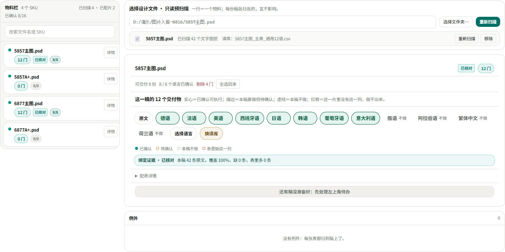
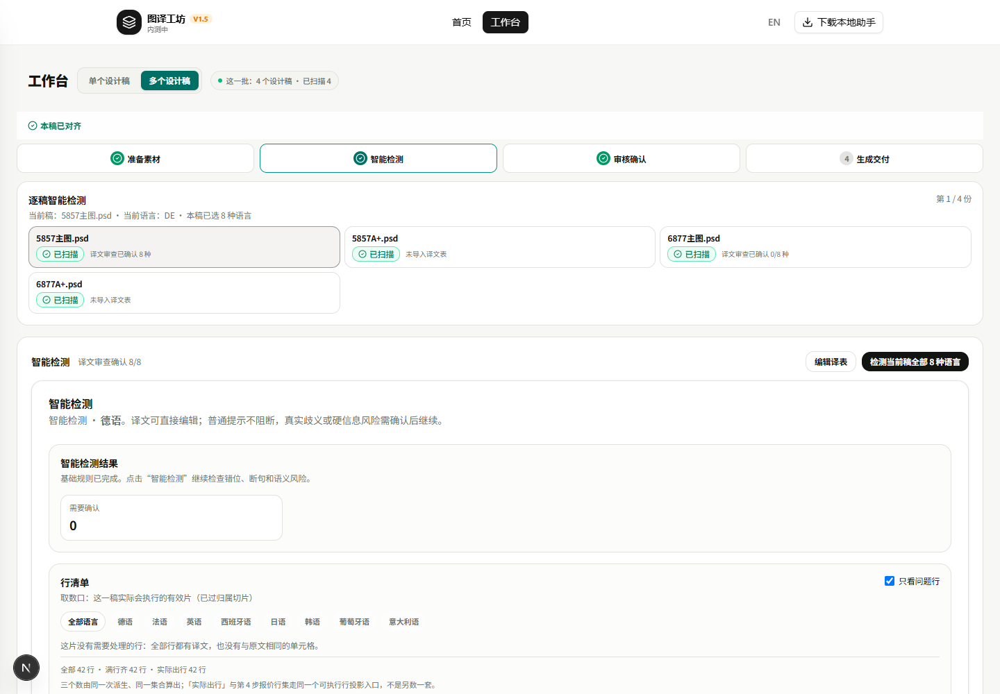

模型改口/ 一张表带多门语言 · 批量工作台/ 2026-10-30
你图 1／图 2 的前提是「一张主表带 8 语」，以前做不到——一张表只认第一门语言。现在改口了：夹具里一张「主表_通用12语」一次点亮 12 个交付物。同时更正我上一份报告的一处不实：那句「门禁 8 项全绿」里，有两项门我根本没跑。
模型改口已落地，单语言表行为不变。多语表不再被踢成孤儿；份数与 12 门上限改数「门」不数「表张数」；同一门两张表仍然停给人选，不自动替你挑。计费四层与助手零改动，合同门与信任链门复跑为证。
MULTI_LANGUAGE_TABLE 丢进孤儿堆，这条判定已移除（src/lib/workbench/table-grouping.ts:213-223 原处）。table-grouping.ts:278-333）。languageCount 不再等于表张数（group-binding.ts:282）；超 12 门按门摘除并逐门点名（table-grouping.ts:355-379）。langsByTablePath，不再拿表头原始列数点格（table-grouping.ts:76-77、group-binding.ts:147-166、192-224）。服务端报价与结算、助手、计费四层（batch-executable-rows／row-derivation／batch-v3／binding-core／billing-evidence-rows.js）——动手前先查过影响面，这几层本就按语言数组取数，输入形状没变。

5857主图_主表_通用12语.csv，点掉 4 门后 8 实做＋4 虚线；绑定证据「已核对本稿 42 条原文，覆盖 100%，缺 0 条，表里多 0 条」。
新写 5 条多语断言（tests/unit/group-binding.test.ts 末段）：8 语主表→8 门；同门双表只停那一门；人选后另一张点名；8＋6 语两张→12 门封顶并点名；负控把「只取第一列」写回去→塌成 1 门。
把绑定层临时改回「只取第一列」跑该文件 ⇒ 4 条新断言立刻变红（Tests 4 failed | 22 passed），随后按 sha256 还原（改前 0aae37f6d334，还原后逐位相同）。这条门不是写完就算数。
step1-stage-view.test.tsx）：「已剔除」→「不做」、语言格 ES/FR/JA→中文语言名、第 1 步矩阵视图改为断其不存在、左栏份数改分数徽章＋title 双钉。每条旁都注明「口径变更：旧 X → 新 Y（图 1 重做，2026-10-30）」。test:workbench-batch-groups 和全量单测，所以那句「8 项全绿」覆盖不全。是我漏跑，不是别人写坏的。tsc 0、lint 0、test:batch-row-contract 0、test:trust-chain 0、test:wb-four-screens 0（100/100＋41/41）、test:step1-mock-contract 0（102 判据／0 失败）、test:workbench-ui-contract 0、test:workbench-scope 0（53）、test:batch-workbench-guards 0（63）、test:workbench-batch-groups 0（35 checks／133 tests）、test:en-workbench 0（17）、i18n:guard 0（1508/1508）。日志：worktrees/develop/tmp/multilang-knife/。
你说「跑」，我先摸了环境：助手 3.7.28 在线（:49152）、真 Photoshop 在跑（PID 25136）。但批量执行这一路被环境闸挡着——第 4 步界面原文「本次批量执行尚未就绪：当前测试环境仅开放 Web 功能，真实执行暂未开放」，按钮是灰的。要真跑批，得先按三段轨上测试站再开执行回归批，那一步同时涉及发布和真实扣积分，我不自己按。
你在本机 127.0.0.1:3000 用自己账号登录一次，指一个真稿文件夹（例如 F:\改语言 里的一份），我立刻把「已扫描 N 个文字图层」「实证」和主表那一行截成真数据。只读 PSD，不写文件、不花钱。
需你先授权：提交＋推 GitHub＋按三段轨更新测试站＋开执行回归批。会真实改 PSD 副本并扣积分，建议先看第 1 路的真扫描结果再定。
--ring 未动。worktrees/develop/docs/HANDOFF.md 顶部登记偏差四条。